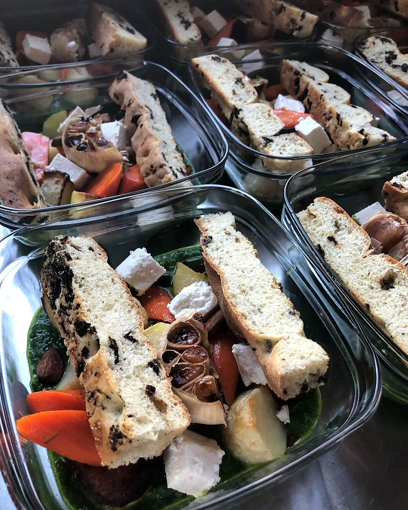
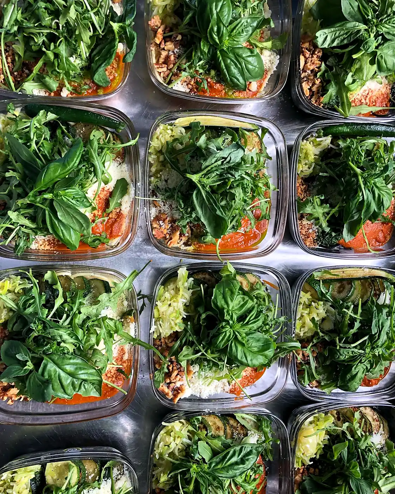
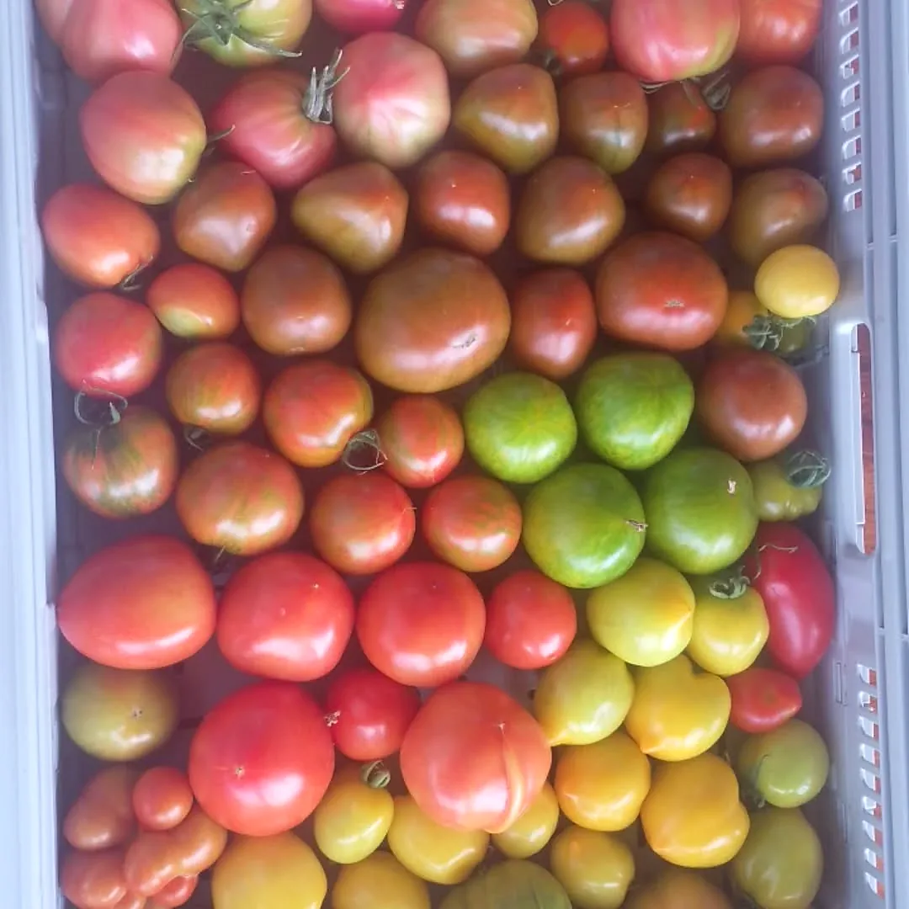
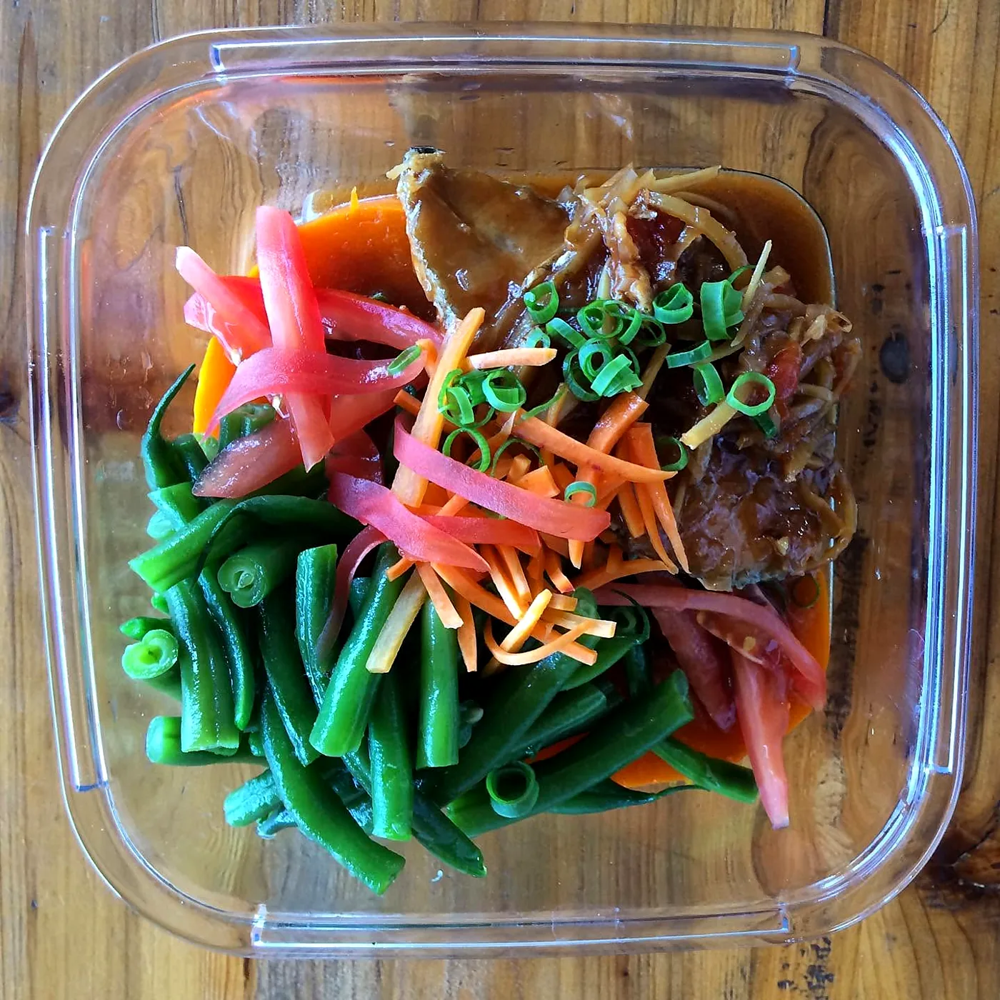
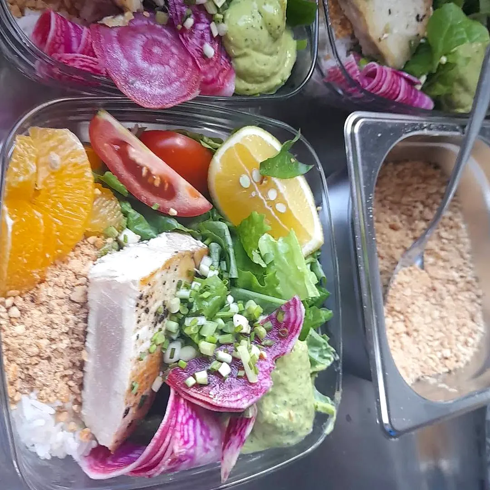
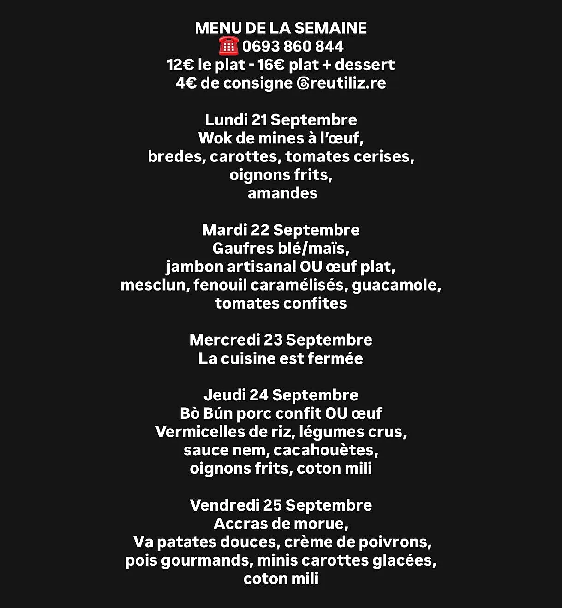

La cuisine d'Olivier
« Je cuisine avec des produits frais »
Chaque semaine, Olivier compose un menu du jour qui voyage : bò bún, wok, falafels, accras de morue, œufs plein air, légumes rôtis… Il cuisine en privilégiant les circuits courts et les produits de saison, avec le Marché forain de L'Étang-Salé.
Les plats arrivent dans des barquettes inox consignées avec Reutiliz : une cuisine gourmande, pensée zéro déchet.
🌱 Amis végétariens : « tous les plats existent en version sans viande, il suffit de me le signaler à la commande ».

Simple comme un coup de fil
Comment commander
- 1
Le menu de la semaine
Olivier le publie sur sa page Facebook, en général le dimanche.
- 2
Un appel ou un message
Au 0693 860 844 pour réserver votre plat.
- 3
Livré chez vous
Livraison gratuite sur L'Étang-Salé et ses environs, en barquette consignée.
12 € le plat · 16 € plat + dessert · 4 € de consigne
Tarifs publiés par Olivier sur son menu de la semaine du 9 novembre 2026.
Dans les barquettes
Ça donne faim
Faites glisser →





Pour vos tables à la maison
Olivier, chef à domicile
« Contactez-moi directement pour un devis concernant une prestation de chef à domicile : dîner d'affaire, moment convivial entre amis, occasion spéciale, je m'adapte à vos besoins. »
On le croise aussi sur les festivals : en octobre 2026, aux Vergers de Mahavel pour le Festival Jardiner Ses Passions, avec des repas équilibrés servis en vaisselle réutilisable et des gourmandises « à déguster avec les doigts ou sur un mini rondin de bois ».
Gustativement vôtre !
Recommandé à 100 % (11 avis Facebook)
Ils en parlent
« Je suis végétarienne et sans gluten. Merci Olivier pour ta merveilleuse cuisine remplie de saveurs. Miam 😋 »
CéLine, avis Facebook
« Pendant 3 jours lors de notre Festival Partaz Ek Lo Ker, Olivier a préparé de délicieux plats originals, uniques… »
Jardiner Ses Passions, avis Facebook
« Une cuisine pleine de fantaisie et de saveurs avec Olivier le cuisinier ! »
Brigitte, commentaire Facebook (octobre 2026)
« Trop beau et tellement bon quelque soit le plat »
Aude, commentaire Facebook
✦ Offrir pour Noël ✦
Un repas de fête signé Olivier
Pour un dîner de fin d'année entre amis ou en famille, Olivier peut venir cuisiner chez vous : un menu pensé avec vous, des produits frais et de saison, et le plaisir de recevoir sans passer la soirée en cuisine.
Et pour faire plaisir : offrez une semaine de barquettes à un proche !
Nous trouver
Commander chez Olivier
📍 L'Étang-Salé — livraison gratuite sur L'Étang-Salé et ses environs
✉️ olivierlecuisinier@gmail.com
Bon à savoir
♻️ Barquettes inox consignées avec Reutiliz (4 € de consigne).
🌱 Chaque plat existe en version végétarienne, sur simple demande.
🥬 Produits frais, de saison, en circuit court.